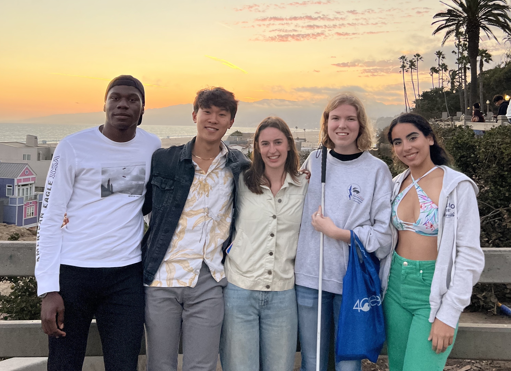
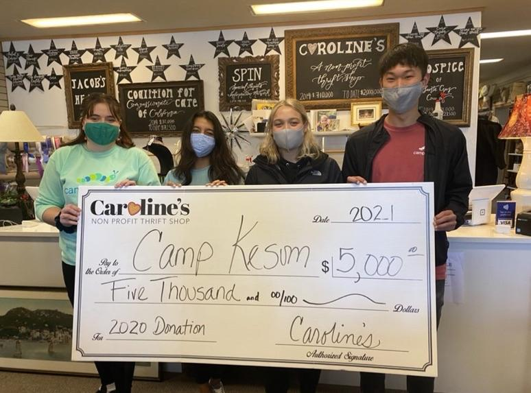

Education & Affiliations
Celsius Therapeutics (January 2023 - Present)
In January 2023, I joined the machine learning team at Celsius Therapeutics in Cambridge Massachusetts as a Data Scienctist.
This is my first industry experience and I am fortunate to be working at a company with big aspirations in the pharmaceutical world.
During this time I will be looking at primarily Bulk RNA-seq data & Histology images to try and validate some gene targets that the company has identified in their biomarker discovery process.
In my small team we are currently trying to develop a precision medicine that will help treat a subset of patients who are diagnosed with IBD (Crohns disease & Ulcerative Colities)
If all goes well at the end of the day, our machine learning pipeline will be able to be used for drug development in actual clinical trials!
Talk about a really exciting and rewarding experience!
UCLA, Computational Medicine (June 2022 - August 2022)
In the summer of 2022, I worked as a computational and genomics analyst at UCLA within the computational medicine department under the Bruins in Genomics Summer Program.
In this program, I worked with Dr.
Jeffrey Chiang and Dr. Ákos Rudas to develop a deep learning pipeline that can predict future Arterial Blood Pressure.
On top of working alongside these extraordinary scientists, I also got to meet a spectacular cohort of undergraduates across America who worked on other problems in computational biology.
You can read more about the experience outside of work under my
Blog Posts tab.
This experience was truly memorable, and I am grateful to have worked at a world-renowned university that runs cutting-edge research.

UCSC Genomics Institute (September 2021- June 2022)
In Fall 2021, I entered
Dr. Vanessa Jonsson's lab as an undergraduate researcher affiliated with the UCSC Genomics Institute.
During my time in this institute, I collaborated with
Dr. Razvan Marinescu (MIT Computer Science & Artificial Intelligence Laboratory) and
Vedu Mallela (Georgia Tech, School of Computing) on a single cell genomics problem.
With a recent influx of biological data due to NGS & single-cell sequencing, our goal was trying to comprehend fundamental changes "cell-by-cell" rather than those at a population level.
The hope in this field is that we can understand things like cancer, stem cells, aging, as well as the development of drug resistance to a much greater extent.
The question we were addressing was attempting to map chromatin accessibility assays to gene expression profiles because chromatin plays a massive role in gene expression regulation.
Camp Kesem (Sept 2020 - June2022)
Camp Kesem is a college-run non-profit organization where college students volunteer their time year-round to fundraise and host a free summer camp for children whose parents are affected by cancer.
While at this non-profit organization, I served as the treasurer of the UC Santa Cruz Chapter.
As the treasurer, I got to use some of my mathematics to crunch some numbers and get hands-on experience working with financial data management through excel spreadsheets.
More specifically, I managed chapter finances, filed company grants from local Santa Cruz non-profit businesses, and created budgets for all the expenses needed to host a summer camp.
I enjoyed my time serving as a treasurer and counselor for this non-profit organization.

UC Santa Cruz, Baskin School of Engineering (September 2019 - June 2022)
In Spring 2022, I graduated with my Bachelor of Science degree in Applied Mathematics at UCSC's Jack Baskin School of Engineering with Summa Cum Laude honors.
I initially entered as a pure mathematics major in the fall of 2019. However, I soon realized that logic and proofs were not the academic paths I wanted to pursue.
Therefore in my second year at university, I took my first programming class and was forever changed.
I ended up switching to the Applied mathematics department after the conclusion of my second year, where I focused primarily on computing and mathematical biology.
Taking courses like numerical analysis, scientific computing, and data-driven modeling, I was inspired to use my quantitative background and work in the life sciences field.
---
Goals
Some of my current goals is to build a healthy work life balance. My primary work day is from 9-5 and outside of that I have become exposed to a lot of free time.
It has felt foreign to not have to do homework after a long work day so I am trying to utilize my time by doing side projects, going out and meeting people, and enjoying my early 20's.
I plan to travel whenever I can, and truly experience the most out of my time in this brand new city of Boston.
Another goal of mine is to become a better writer/storyteller, where I practice that constantly through blogging.
There will be a mixture of academic focused writing, and casual writing to allow me to write in different voices.
So feel free to check out my current ongoing blog!
Outside Interests
Outside academics, I am widely interested in a few things. First and foremost is photography. I enjoy photography so much that I gave my hobby its own tab
here.
Photography has been my escape and a way to document my hectic young life.
With everything going by so quickly, I forget every little thing that has happened.
However, photography has been a way to capture the moment and gives me a chance to relive it again.
I have also been widely interested in traveling. Before working at Celsius, I had the privelage of living in Europe, attending EPFL and during I spent a lot of my free time traveling.
During COVID-19, I think a lot of freedom was deprived especially during my golden college years.
Since then, I have only wanted to regain some of the years I lost by doing ambitious trips (safely)!
Since many neighboring big countries surround Switzerland, it has been accessible to travel.
Also, Western Europe is central in reaching the USA, Africa, and Asia and I wish to take advantage of traveling to some of these areas when I have holiday breaks.
Experiencing brand-new cultures has been widely rewarding because you are exposed to new ideas and experiences.
Though California is pretty multicultural, nothing compares to the experiences spent inside another country.
Lastly is just helping people.
Throughout my whole life, helping people has been one of the most rewarding experiences that I have ever felt.
It is something I value and has widely become the reason I pursued the biotech industry rather than standard tech.
There was a time in my life when I was very ill with an autoimmune condition, and I spent a lot of my time being helped by others because there was not much I could do with my frail body.
So life comes at you full circle.
I plan to dedicate my time if time allows to hopefully go volunteer with humanitarian groups (UNICEF, etc.) whenever time allots.
I look forward to using my time to help those who are in need.